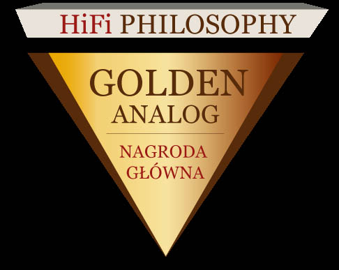

No matter if you want to bake a cake, to fly to the Moon, or to reproduce sound by natural way, technology is necessarry.
Since 1877, first phonograph by Thomas Edison, technlogy of sound recording and playback was improved a lot.
Unfortunatelly, reproducted sound is still far from original. New analog and digital recordings seems to reach high quality.
Speakers seems to be weak link in whole chain of audio system. Distorsions made by speakers are much bigger, than created by amplifiers or record equipment.
It should be not curious, because speaker systems are very complex mechanical devices. Diaphragms has many resonances. Sometimes they are smaller, than wawelenght, sometimes bigger. Materials of cones, domes and ribbons has limited stifness, limited sound wave propagation speed. Sound waves are reflects from edges of diaphragm.
Speaker cabinets has own weakness too, own resonances, reflections from walls, limite stifness.
So, since beginning of XX century, imperfect mechanics of speaker systems is trying to be improving by mechanical solutions. New materials, like Kevlar, Aluminium, ceramics, beryllium, even diamonds are using. Complex shapes, like honeycomb, matrix are applied. New speaker systems are better, than 100 years ago.
Similar problems with control complex mechanics has car enginees. Car engine is complex, working is wide range of revolutions, load and teperature. To control it, carbutaror is needed. Some very complex, with twin duct, additional pumps for fast acelleration. But still not full sufficient. Carburator regulation was nightmare of drivers and mechanics.
Electronic, then computer control of car engine was a soultion. Engine Control Unit is a dedicated computer, which consist of general program to control engine, and specify engine map. Due to map, computer can feed portion of fuel, ignite spark, depeding of driver wish, and conditions. So, operating contemporary car is easy, just turn th ekey and go.
Speaker industry is still in carburator age.
But real improvment is possible only by electronics. Similar to Engine Contol Unit, a Digital Speaker Processor is dedicated to control speakers. It has overal program, and specify speaker or headphone map. So, processor, accoridng to map, makes correction signal to improve speaker or headphone weakness.
Applying Ancient Audio Digital Speaker Processor is possble to get excellnt sound from small speakers, and improve one-two classes high, the expencive ones.
Sound of audio system, applying Digital Speaker Processor is very close origial, natural sound of human voice and instruments.
Digital Speaker Processor technology was highly appreciated by audiophiles, and press:
Our processor in Hiend-Audio Our processor in HiFiphilosophy 